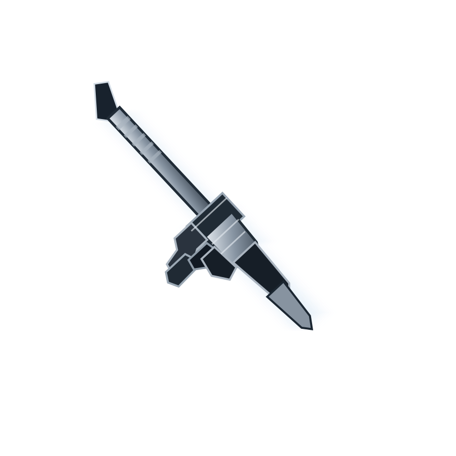

ST.
01 / SecureTextchat · rules · admin tools
NX.
02 / Neuruxpython · windows · system info
CK.
03 / CK:RP toolsapi · records · web interface
D/
04 / donidonka.infothis site · html · css · js
the artwork

a few details from the projects and the site itself. no fake screenshots, just the actual builds.

music
moog city · slowed + reverb
tap play if your browser blocks autoplay